| 日付 | 2021年7月31日（土） - 2021年8月7日（土） | ||||||||
|---|---|---|---|---|---|---|---|---|---|
| 山域 | 東北の山 | ||||||||
| メンバー | 家族（妻、長女・10歳、長男・8歳） | ||||||||
| 山行形態 | 子連れ7泊8日キャンプ | ||||||||
| アクセス | 車、バス | ||||||||
| ルート |
|
5日目
2日連続山に行ったので本日は休養日。
天気予報は芳しくないが、いつにも増してキャンプ場はきれいに晴れ渡っている。
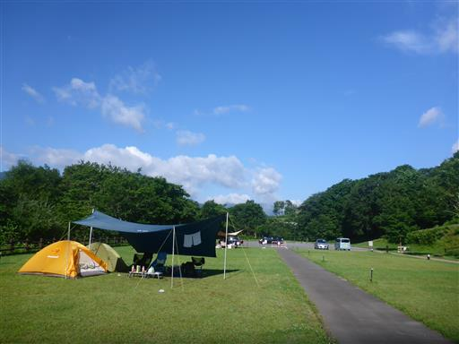
本日は観光。行先はいろいろ迷ったが、安比高原牧場に行くことにする。
伊豆でできなかった魚釣りのリベンジをやる予定だ。
その前に、安比高原の近くにある不動の滝に立ち寄ることにする。
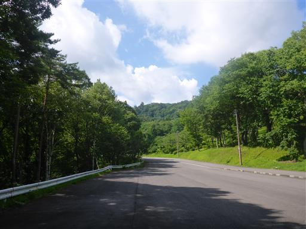
立派な石柱と鳥居。
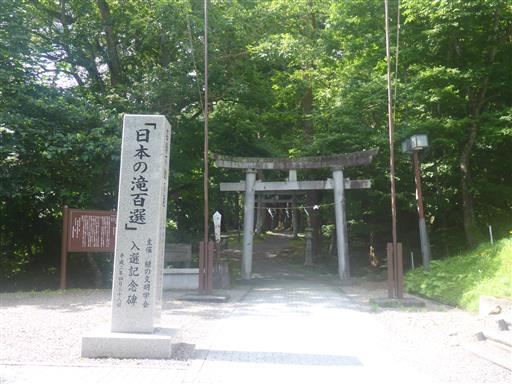
鳥居の横には、これまた立派な剣が祀られている。
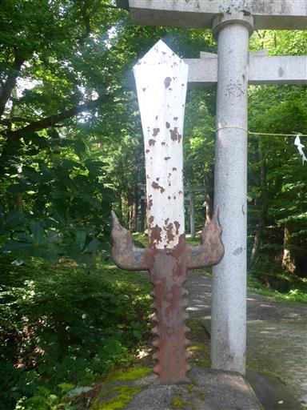
大きな杉の間の参道を歩く。
奥に桜松神社があり、滝と言うより神社訪問と言う方が近い雰囲気だ。
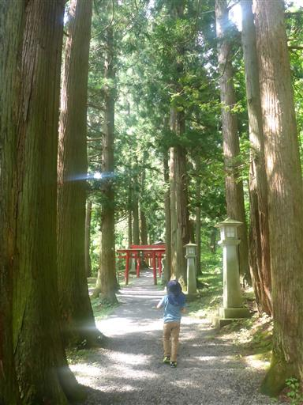
山門を潜る。
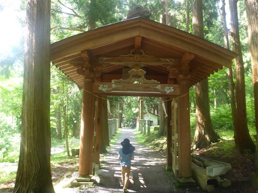
その後は石灯篭が並んでいる。
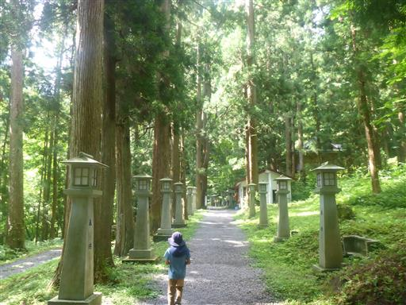
大量のリンドウ。売り物だ。
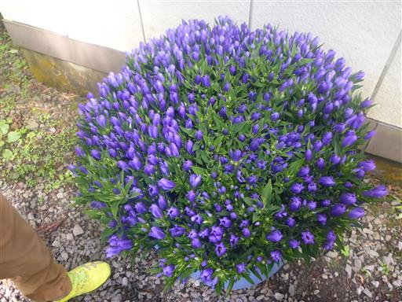
もう1つ門を潜る。
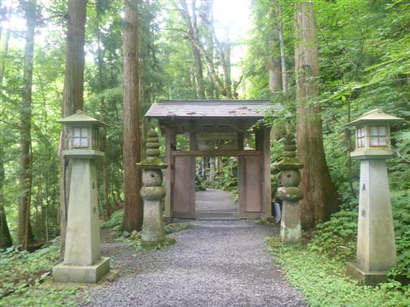
苔生した狛犬。
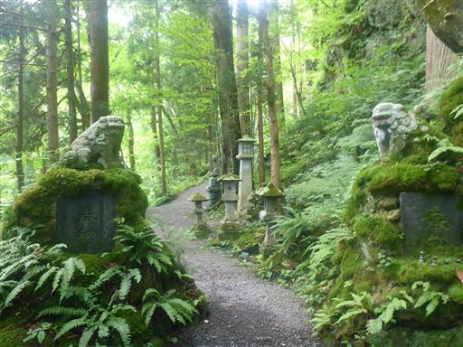
桜松神社に到着。建物が岩の中に半分埋まっている。
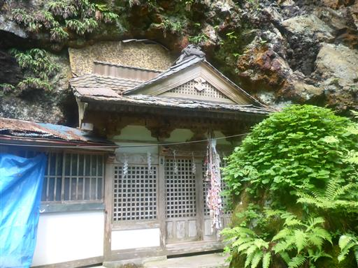
その先しばらく歩くと、ようやく不動の滝に到着する。
落差15mの滝だ。
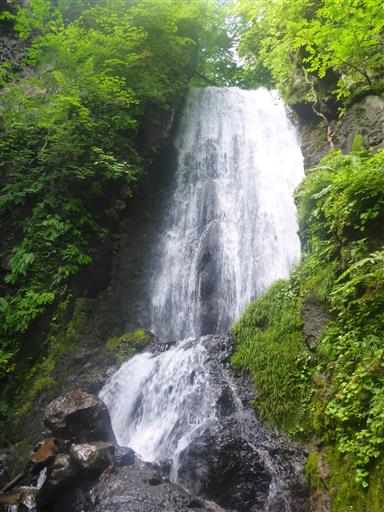
滝のすぐ下に赤い橋が架かっている。
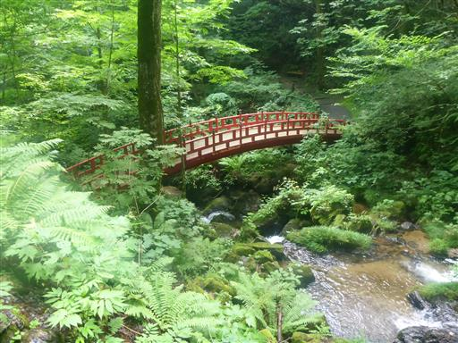
赤い橋から眺める不動の滝。
おやつを持ってきたが、ゆっくり腰を下ろせる場所がなく、
虫の数も多くて鬱陶しいので、戻ることにする。
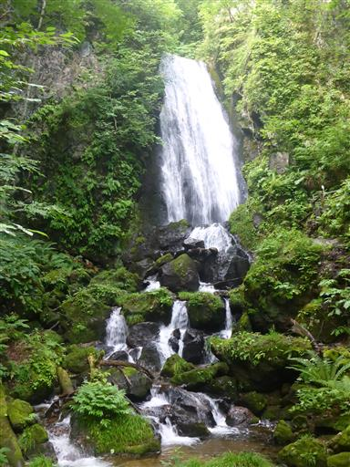
川沿いの道を歩いて戻る。
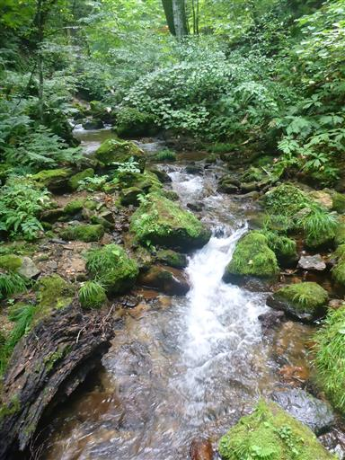
ベンチとテーブル。草に覆われていて、ここでも休憩する気にはならない。
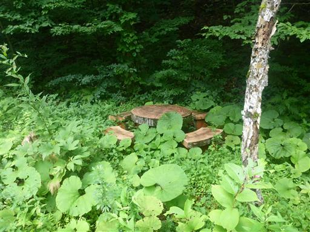
不動の滝を後にし、安比高原に向かう。
森の中に突然巨大なホテルが目の前に現れ、度肝を抜かれる。
ここはスキーリゾートで、バブルの時代に開発が進んだ場所だ。
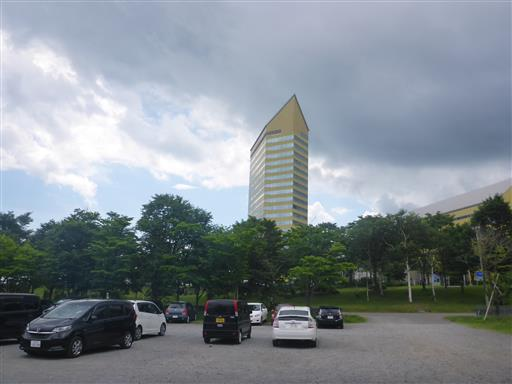
早速釣りの準備。
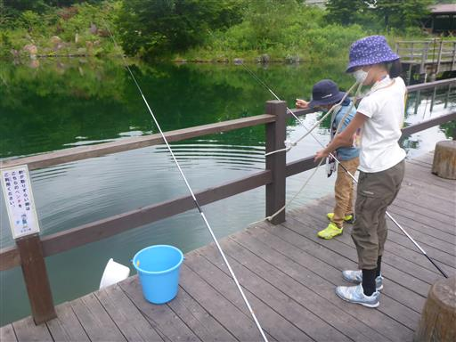
釣り堀なので、何の工夫をしなくても容易に釣れる。
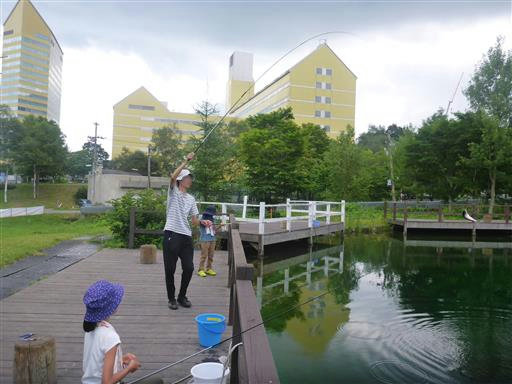
息子も成功。ファミリーパックで5匹まで釣れるので、
自分が1匹、子供が2匹ずつ釣る。
釣りの初体験で子供たちは大喜びだ。

釣れた魚は捌いて焼いてくれる。
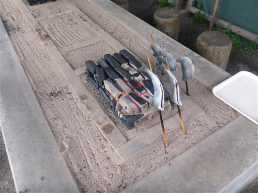
まず背中、次にお腹、最後に側面だ。串は結構熱い。
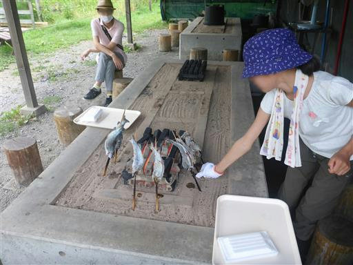
始めて釣った魚を食す。
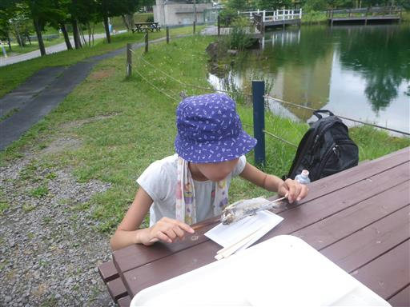
食べていると大雨が降ってきたので、屋根のある場所に避難。
今日は予報通り天気が不安定だ。
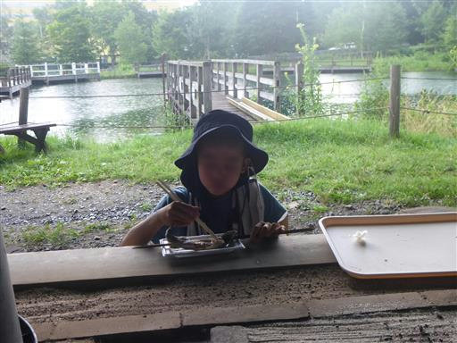
釣りを終えたら周囲を散策。緑の迷路があったのでやってみる。
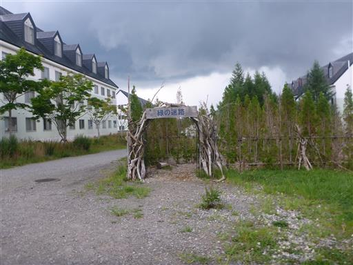
樹木がスカスカで全体像が見え、迷路も単純なため、一瞬でゴール。
それにしても周囲に建っているひと気のない建物は何物だろう？
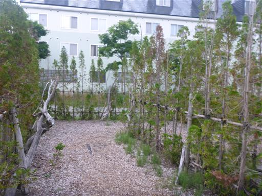
魚を食べたばっかりなので、カフェで軽食をとる。
ranchの綴りが気になって仕方がない。
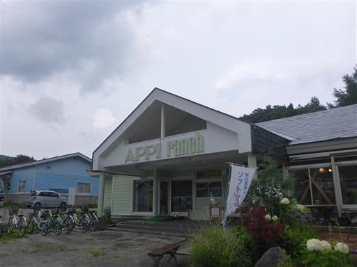
周囲を散策。こちらはグランピング施設。
広い空間でなかなか魅力的だ。その分値も張るが…
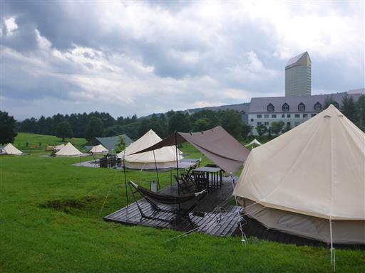
安比恐竜パークの案内が出ているため行ってみるが、有料のアドベンチャー施設だったためパス。
そもそも恐竜と何のゆかりもない土地だし。
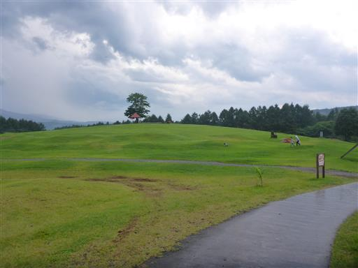
安比雲海ゴンドラが見える。あの山から八幡平まで登山道が通じている。
残念ながらこの天気ではあまり行く価値がないだろう。
安比高原は各施設があちらこちらに無造作にあって、まとまりがない感じだった。
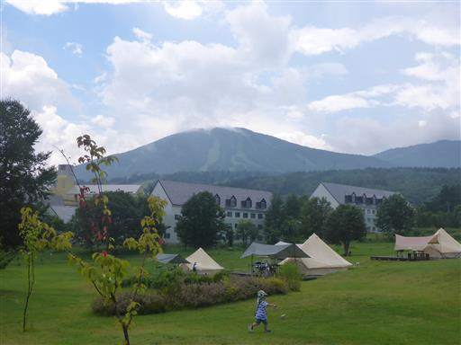
安比高原を後にし、本旅行2回目の買い出しを行う。
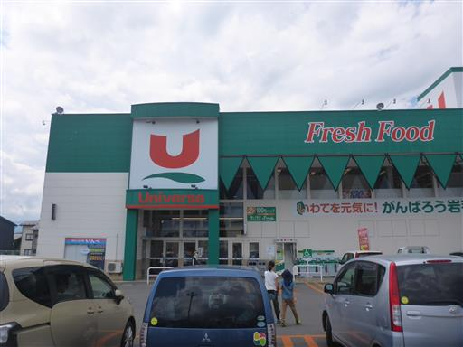
昼過ぎにはキャンプ場に戻ってくる。
将棋をしたり、ボール投げをしたりして、のんびり過ごす。
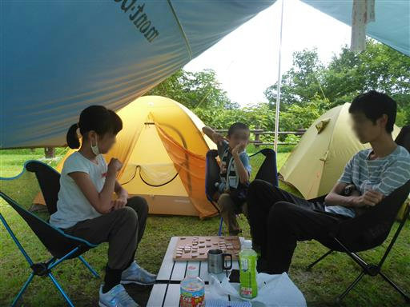
遠くに大きな雲が見える。
車で移動中に大雨に突入したが、本日はあちらこちらで入道雲が発達しているようだ。
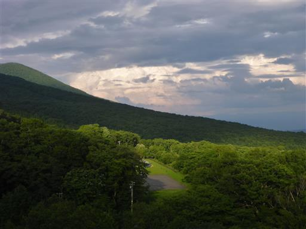
夜中は芝生サイトの隣にある森林サイトを探検してみる。
こちらは車を横付けできる。
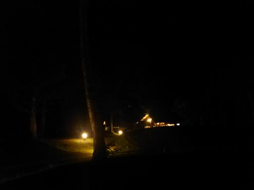
ミヤマクワガタを発見。
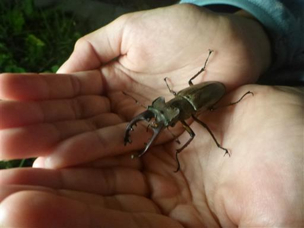